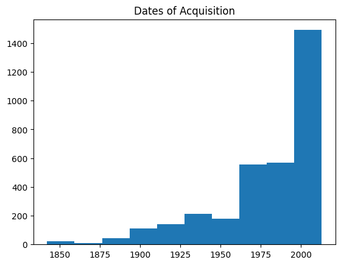

%matplotlib inline
import matplotlib.pyplot as plt
import numpy as np
import pandas as pdSummary Information of Data
The data from the Tate CSV File, from the CORGIS Dataset Project, contains information about the artist (gender, name, role, birth year, birth location, year of death), artwork information (medium, thumbnail, title, url, dimensions), and metadata (aquisition dates, date of creation, credit).
tatedf = pd.read_csv('https://corgis-edu.github.io/corgis/datasets/csv/tate/tate.csv')tatedf| artist.gender | artist.name | artist.role | data.medium | data.thumbnail | data.title | data.url | dimensions.depth | dimensions.height | dimensions.width | metadata.acquisition date | metadata.creation decade | metadata.creation year | metadata.credit | artist.birth.location | artist.birth.year | artist.death.location | artist.death.year | |
|---|---|---|---|---|---|---|---|---|---|---|---|---|---|---|---|---|---|---|
| 0 | Female | Abakanowicz, Magdalena | artist | Burlap and resin | http://www.tate.org.uk/art/images/work/T/T12/T... | Backs | http://www.tate.org.uk/art/artworks/abakanowic... | 0.0 | 0.0 | 0.0 | 2009 | 1970 | 1976 | Presented anonymously 2009 | Polska | 1930 | NaN | 0 |
| 1 | Male | Abbey, Edwin Austin | artist | Ink on paper | http://www.tate.org.uk/art/images/work/N/N03/N... | Illustration to Judith Shakespeare | http://www.tate.org.uk/art/artworks/abbey-illu... | 0.0 | 419.0 | 305.0 | 1924 | 1880 | 1883 | Presented by a group of admirers through John ... | Philadelphia, United States | 1852 | London, United Kingdom | 1911 |
| 2 | Female | Abbott, Berenice | artist | Photograph, gelatin silver print on paper | NaN | Tri-Boro Barber Shop | http://www.tate.org.uk/art/artworks/abbott-tri... | 0.0 | 200.0 | 250.0 | 2010 | 1930 | 1935 | Accepted by HM Government in lieu of inheritan... | Springfield, United States | 1898 | Monson, United States | 1991 |
| 3 | Male | Abbott, Lemuel Francis | artist | Oil paint on canvas | http://www.tate.org.uk/art/images/work/T/T01/T... | Portrait of the Engraver Francesco Bartolozzi | http://www.tate.org.uk/art/artworks/abbott-por... | 0.0 | 676.0 | 756.0 | 1968 | 0 | 0 | Presented by Mrs M. Bernard 1968 | Leicestershire, United Kingdom | 1760 | London, United Kingdom | 1803 |
| 4 | Male | Abrahams, Ivor | artist | Fibreglass and polystyrene | http://www.tate.org.uk/art/images/work/T/T03/T... | Lady in Niche | http://www.tate.org.uk/art/artworks/abrahams-l... | 762.0 | 1575.0 | 2095.0 | 1982 | 1970 | 1973 | Purchased 1982 | Wigan, United Kingdom | 1935 | NaN | 0 |
| ... | ... | ... | ... | ... | ... | ... | ... | ... | ... | ... | ... | ... | ... | ... | ... | ... | ... | ... |
| 3327 | Male | Zuloaga, Ignacio | artist | Oil paint on canvas | http://www.tate.org.uk/art/images/work/N/N01/N... | View of the Escorial | http://www.tate.org.uk/art/artworks/zuloaga-vi... | 0.0 | 406.0 | 292.0 | 1923 | 1900 | 1905 | Presented by T.W. Bacon through the Art Fund 1923 | Espaa | 1870 | Espaa | 1945 |
| 3328 | Male | Zyw, Aleksander | artist | Oil paint on canvas | http://www.tate.org.uk/art/images/work/T/T00/T... | Light | http://www.tate.org.uk/art/artworks/zyw-light-... | 28.0 | 662.0 | 934.0 | 1962 | 1950 | 1957 | Presented by Lady Alice Egerton through the Fr... | Polska | 1905 | NaN | 1995 |
| 3329 | Male | di Suvero, Mark | artist | Lithograph on paper | NaN | Tetra | http://www.tate.org.uk/art/artworks/di-suvero-... | 0.0 | 843.0 | 1152.0 | 2004 | 1970 | 1976 | Presented by Tyler Graphics Ltd in honour of P... | Shanghai, Zhonghua | 1933 | NaN | 0 |
| 3330 | Male | van Elk, Ger | artist | Photograph, colour, on paper with acrylic pain... | NaN | Lunch II | http://www.tate.org.uk/art/artworks/van-elk-lu... | 0.0 | 1000.0 | 800.0 | 1980 | 1970 | 1976 | Purchased 1980 | Amsterdam, Nederland | 1941 | NaN | 0 |
| 3331 | Male | tyrsk, Jindrich | artist | Photograph, black and white, on paper | http://www.tate.org.uk/art/images/work/P/P79/P... | Untitled | http://www.tate.org.uk/art/artworks/styrsky-un... | 0.0 | 0.0 | 0.0 | 2007 | 1930 | 1934 | Purchased 2007 | NaN | 1899 | Praha, Cesk Republika | 1942 |
3332 rows × 18 columns
tatedf.describe()| dimensions.depth | dimensions.height | dimensions.width | metadata.acquisition date | metadata.creation decade | metadata.creation year | artist.birth.year | artist.death.year | |
|---|---|---|---|---|---|---|---|---|
| count | 3332.000000 | 3332.000000 | 3332.000000 | 3332.000000 | 3332.000000 | 3332.000000 | 3332.000000 | 3332.000000 |
| mean | 79.340186 | 785.431363 | 718.760534 | 1978.930672 | 1729.429772 | 1733.471789 | 1864.450180 | 1242.624550 |
| std | 400.998912 | 958.836269 | 728.612090 | 32.768160 | 598.943711 | 600.335845 | 213.973474 | 921.207257 |
| min | 0.000000 | 0.000000 | 0.000000 | 1842.000000 | 0.000000 | 0.000000 | 0.000000 | 0.000000 |
| 25% | 0.000000 | 248.000000 | 240.000000 | 1967.000000 | 1880.000000 | 1888.750000 | 1849.000000 | 0.000000 |
| 50% | 0.000000 | 514.000000 | 527.000000 | 1988.000000 | 1950.000000 | 1955.000000 | 1907.000000 | 1868.000000 |
| 75% | 0.000000 | 991.250000 | 921.000000 | 2003.000000 | 1970.000000 | 1979.000000 | 1939.000000 | 1964.000000 |
| max | 8965.000000 | 16000.000000 | 10900.000000 | 2013.000000 | 2010.000000 | 2012.000000 | 2004.000000 | 2014.000000 |
#Data Visualization 1
plt.hist(tatedf["metadata.acquisition date"])
plt.title('Dates of Acquisition')
plt.show<function matplotlib.pyplot.show(close=None, block=None)>
#Data Visualization 2
plt.hist(tatedf["metadata.creation decade"])
plt.title('Creation Dates of Artworks by decade')
plt.show<function matplotlib.pyplot.show(close=None, block=None)>
#Data Visualization 3
tatedf.boxplot(column = "metadata.acquisition date")
plt.title('Boxplot of Acquisition Dates')
plt.show<function matplotlib.pyplot.show(close=None, block=None)>#Data Visualization 4
tatedf.boxplot(column = "artist.birth.year")
plt.title('Boxplot of Artist Birth Year')
plt.show<function matplotlib.pyplot.show(close=None, block=None)>Beginnings of Tate data analysis
Code for data analysis: Python, Matplotlib
Data visualization #1 (Description): Gender Diversity. I would like to make a pie chart to reveal how many women vs. men artists the Tate holds.
Data visualization #2 (Description): Collection Diversity. I would like to use MATLAB’s bubble cloud plot to reveal any frequencies/preferences that exist with the types of objects chosen to be a part of the collection.
Data visualization #3 (Description): Artist Diversity. I would like to create a geobubble plot using MATLAB to identify any trends in the collection regarding the artist’s location of birth.
Data visualization #4 (Description): Acquisition History. I would like to create a time series plot to find during which time periods were there more/less of a trend in acquiring artwork?